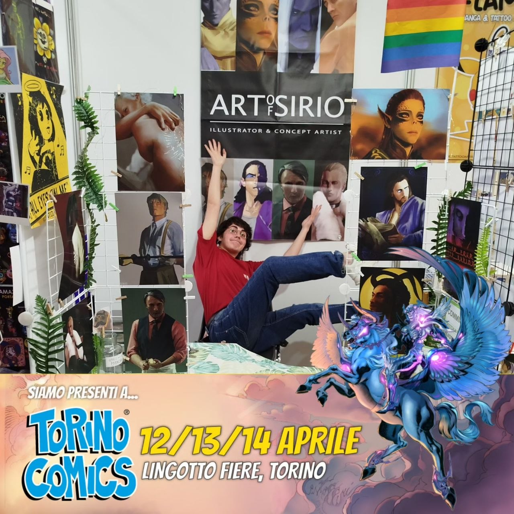
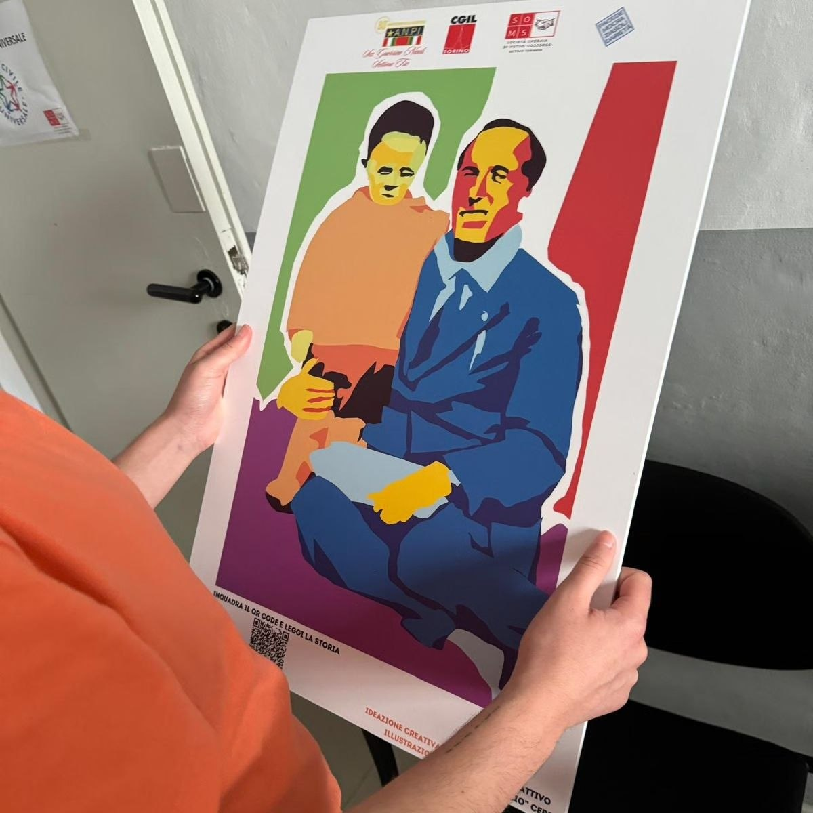
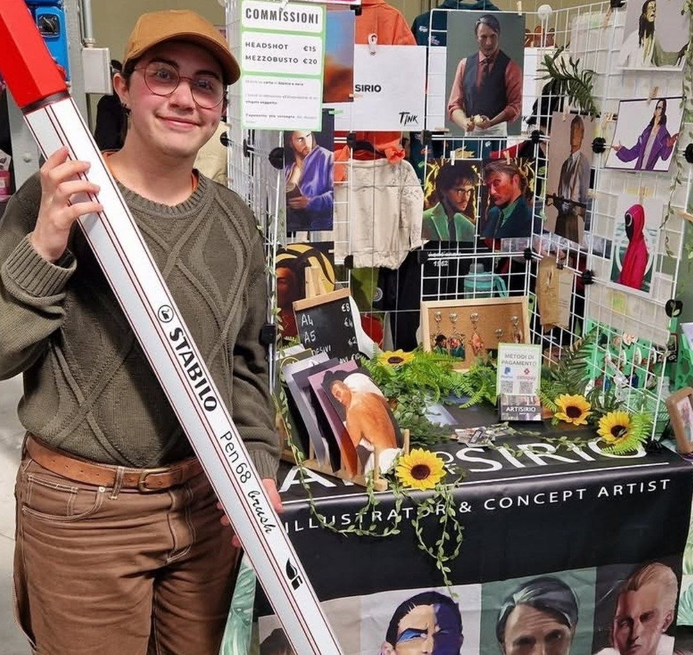
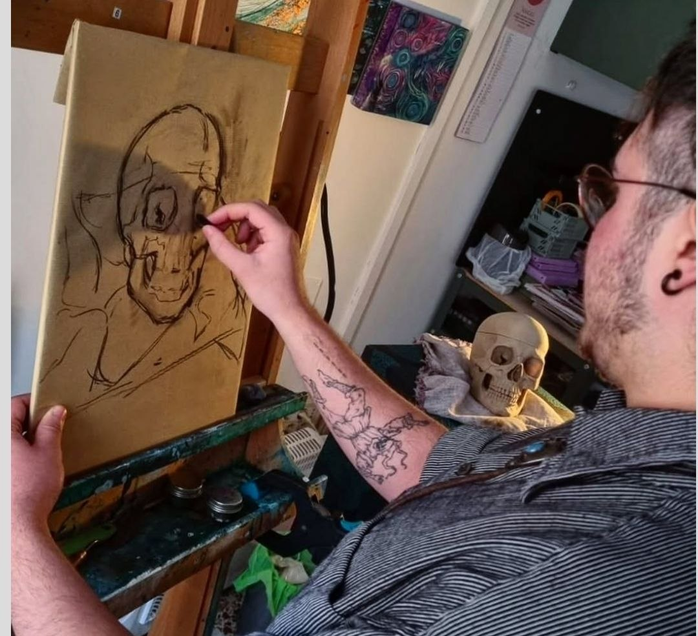

I’m Alessandro Sirio Ceresa (2003), a visual designer and freelance artist based in Turin, Italy.
I’m currently completing my degree in New Technologies of Art at the Albertina Academy of Fine Arts of Turin. I graduated in Graphic Design from Liceo Artistico Felice Faccio in Castellamonte in 2021.
My practice moves across brand identity, editorial design, illustration, and visual development for publishing and videogames. I see myself as a multidisciplinary creative, constantly experimenting, learning new tools, and exploring different ways of building visual narratives.
I’m heavily inspired by role-playing games, videogames, comics and internet culture — all things that naturally shape my aesthetic and creative language.
Even though I work with digital tools every day, I’m critical of the current massification of generative AI imagery. I’m much more interested in intentional, research-driven, and human-centered creative processes.
Since 2021, I’ve been volunteering with the Italian Red Cross in Settimo Torinese, where I also collaborate on communication and promotional materials. I also completed civil service within a local cultural association, an experience that strengthened my interest in community-oriented and socially engaged projects.
I’m openly queer and I value inclusive, respectful, and creatively stimulating environments where people can grow, collaborate, and build meaningful work together.






